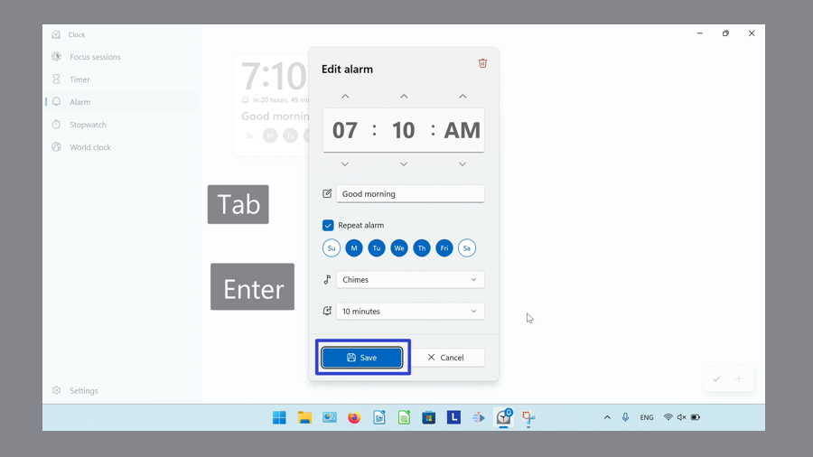

How to Edit the Alarm in Microsoft Windows Clock (Windows 11)
This tutorial covers:
How to Edit the Alarm Time:
How to Edit Alarm Name:
How to Repeat the Alarm
How to Set Dates in the Alarm
How to Edit the Snooze Time Length
How to Turn the Alarm On/Off
How to Exit the Edit Alarm Window
No time to scroll down? Click through this presentation tutorial:
Watch a tutorial video:
How to Add a Timer With Click
- Step 1: First switch to the Alarm mode. Click an alarm.

- Step 2: In the “Edit alarm” window that opens, click the up and down arrow buttons to set the time.

- Step 3: Click the “Save” button.

- The Alarm displays the new time.
How to Edit the Alarm Time With Keyboard
Step 1: Switch to the Alarm mode. Click an alarm.
- Step 2: In the “Edit alarm” window that opens, click the time and on the keyboard type a number.
- Step 3: Click the “Save” button.

- The Alarm displays the new time.
How to Edit the Alarm Time With Right Click
- Step 1: First switch to the Alarm mode. Right click an alarm.
- Step 2: In the menu that opens, click “Edit”.
- Step 3: In the “Edit alarm” window that opens, click the arrow buttons to set the time, and click “Save”.

- The Alarm displays the new time.
How to Edit the Alarm Time With Menu
- Step 1: Switch to the Alarm mode. In the lower right, click the “Edit alarms” or pencil button.
- Step 2: Click an Alarm.
- Step 3: In the “Edit alarm” window that opens, click the arrow buttons to set the time. Click the “Save” button.

- The Alarm displays the new time.
How to Edit the Alarm Time With Keyboard Shortcut
- Step 1: First switch to the Alarm mode. On the keyboard press Alt + E.

- Step 2: Press Tab multiple times to select an Alarm, then press Enter.
- Step 3: In the “Edit alarm” window that opens, press Tab and Enter to edit the alarm settings. Press Tab and on the “Save” button, press Enter. 
- Step 4: Press Alt + D to exit the alarm editing mode.

- The Alarm displays the new time.

How to Edit the Alarm Name With Click
- Step 1: Switch to the Alarm mode. Click an Alarm.
- Step 2: In the “Edit alarm” window that opens, click the “Alarm Name” field and type any text.
- Step 3: Click the “Save” button.

- The Alarm displays the new name.
How to Edit the Alarm Name With Right Click
- Step 1: First switch to the Alarm mode. Click an Alarm.
- Step 2: In the “Edit alarm” window that opens, right click the “Alarm Name” field.
- Step 3: In the menu that opens:
- Click “Select all” to select all the text.

- Click “Copy” to copy the text.
- Click “Cut” to cut the text.

- Click “Paste” to paste the text.

- Click “Undo” to reverse the last action.
- Click “Redo” to reverse the last Undo.
- Step 4: Click the “Save” button.
- The Alarm displays the new name.
How to Edit the Alarm Name With Keyboard Shortcuts
- Step 1: Switch to the Alarm mode. Click an Alarm.
- Step 2: In the “Edit alarm” window that opens, click the “Alarm Name” field. On the keyboard:
- Press Ctrl + A to select all the text.

- Press Ctrl + C to copy the text.

- Press Ctrl + X to cut the text.
- Press Ctrl + V to paste the text.

- Press Ctrl + Z to Undo.

- Press Ctrl + Y to Redo.
- Step 3: Click the “Save” button.
- The Alarm displays the new name.
How to Repeat the Alarm
- Step 1: First switch to the Alarm mode. Click an Alarm.

- Step 2: In the “Edit alarm” window that opens, click to toggle “Repeat alarm” on or off.
- “Repeat alarm” On

- “Repeat alarm” Off

- Step 3: Click the “Save” button.

How to Set Dates in the Alarm
- Step 1: Switch to the Alarm mode. Click an Alarm.
- Step 2: In the “Edit alarm” window that opens, click to select or deselect the dates.

- Step 3: Click the “Save” button.

How to Edit the Snooze Time Length
- Step 1: First switch to the Alarm mode. Click an Alarm.
- Step 2: In the Edit alarm" window that opens, click the “Snooze Time” drop-down menu.

- Step 3: In the menu that opens, click to select an option.
- Step 4: Click the “Save” button.

How to Turn the Alarm On/Off
- Step 1: Switch to the Alarm mode. In the upper right corner of an Alarm, click the toggle switch.
-Alarm On
-Alarm Off

How to Exit the "Edit Alarm" Window
- Step 1: First edit an Alarm. Click the “Cancel” button, or click anywhere outside the window.

Save a copy of these instructions for later with this free tutorial PDF.